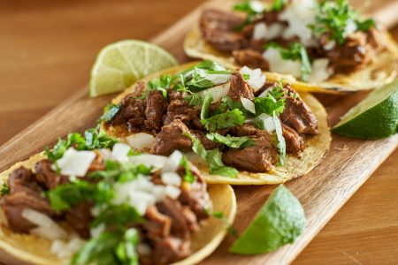

En realidad no se puede determinar con exactitud en qué fecha éste fue inventado pero se cree que el plato tiene su origen en el México prehispánico. Una de las teorías es que este existió debido a que los hombres trabajaban todo el día en el campo, así que las mujeres inventaron este alimento ya que era fácil de transportar y de consumir.
Una teoría sobre el posible origen de la palabra taco es el término ‘tlahco’ del idioma náhuatl, que significa ‘mitad’ o ‘en el medio’, en el sentido que el alimento se coloca en el medio de la tortilla de maíz.
La palabra en náhuatl para referirse a la tortilla de maíz (invento indígena precolombino) es ‘tlaxcalli’.


Los tacos mexicanos son una popular receta de este país americano.
Consiste en carne, generalmente de ternera (o res como lo llaman allí) o de pollo, cocinada junto a tomate y después introducida dentro de una tortilla de maíz o trigo.
Finalmente se adereza con pico de gallo, una salsa típica del país. Un plato con mucha personalidad y que sin duda sabe a méxico. Aquí, lo haremos con carne picada aunque, en realidad se hace con trozos de carne cortadas en tiras, cocinada durante dos horas o más.
Así que se puede decir que aunque se parezca, no es 100% mexicana. Pero para acelerar el proceso que, todos tenemos unas vidas muy ajetreadas ¡haremos una versión mucho más rápida e igualmente sabrosa!